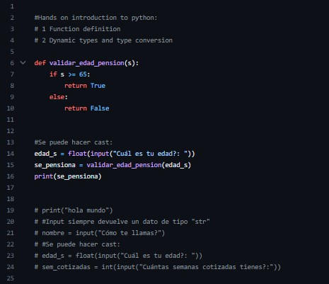
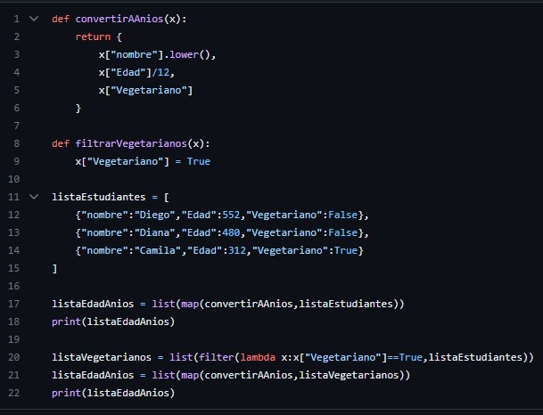
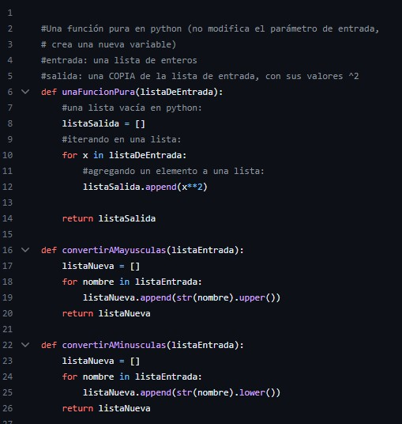
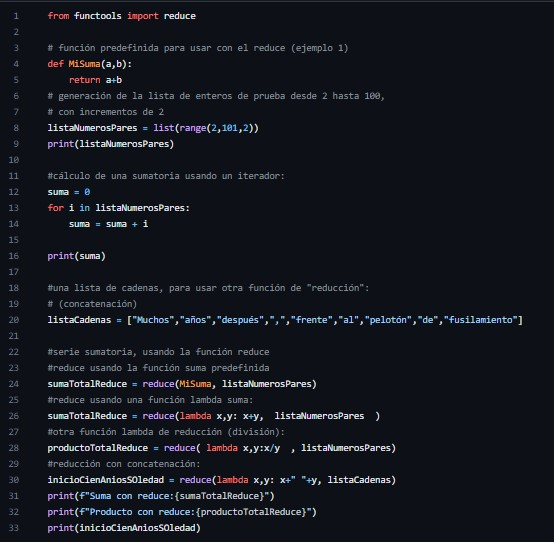

En este corte se inicio empezamos a familiarizarnos con el lenguaje de Pyton  en el cual vimos ejemplos entre las funciones el método map() crea un nuevo array con los resultados de la llamada a la función indicada aplicados a cada uno de sus elementos
En la funcion pura dada una misma entrada, siempre regresa el mismo valor de salida y no tiene otro efecto secundario observable, se puede observar en el siguente ejemplo
la funcion Reduce toma los valores de un array y los reduce a un único valor usando una función dada. acontinuacion en el ejemplo
